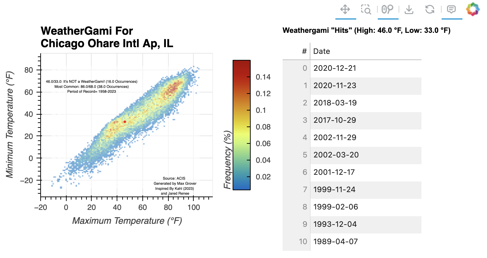

Max Grover#
Hello! I am a fortunate enough to work as a software developer at Argonne National Laboratory, primarily working with the Atmospheric Radiation Measurement Facility, focused on developing open-source tools to improve how we work with climate and weather datasets, such as the Python ARM Radar Toolkit (Py-ART), xradar, and intake-esm.
About me ℹ️
My blog ✍️
Previous Workshops üìö
Recent posts#
2023-12-17 - Argonne Instruments at WFIP3: Days 3-4: A Full Weekend
We had a busy weekend deploying more instruments that are collecting data for the field observation portion of the 3rd Department of Energy funded Wind Forecast Improvement Project, which focuses on offshore wind regions off the coast of New England. On Saturday, we spent a bulk of the day putting the final touches on the 10 meter meteorology tower, shown below.

2023-12-15 - Argonne Instruments at WFIP3: Day 2 - Installation Begins!
Today was the first day of real installation work! We started with a quick breakfast at the hotel, then drove to the field site at sunrise (shown below).

2023-12-14 - Argonne Instruments at WFIP3: Day 1 - Landing in Nantucket
Today was the first day of my trip focused on deploying instruments from Argonne National Laboratory (ANL) (based in Lemont, Illinois), to the East Coast of the United States for the 3rd Wind Forecast Improvement Project (WFIP3). The project aims to improve wind forecasting ability within models, using both models and observations focused on offshore wind farms in the greater Boston, Massachusetts region. Argonne National Laboratory has a collection of instruments, most of which usually reside at the Argonne Testbed for Multiscale Observational Science (ATMOS) https://www.anl.gov/evs/atmos, which can be deployed for different scientific projects! Instruments at Argonne were deployed for previous Wind Forecast Improvement Projects.
The field sites are outlined in the graphic below, which can be found on the project website (https://www2.whoi.edu/site/wfip3/field-observations/) )
2023-11-22 - Interactive Weathergami

Scorigami is an interesting concept. It’s an event in sports where a final score has never happened in its history. For example, in the National Football League, a 20-17 score has happened over 285 times, but a 70-20 score has only happened once. When the Miami Dolphins beat the Denver Broncos 70-20 on September 24th, 2023, that was considered a scorigami!
2023-01-16 - AMS 2023 Reflections: Thank You Denver (and Boulder)!
Last week, I attended the 103rd American Meteorological Society Annual Meeting in Denver Colorado. Prior to attending, I put together a blog post detailing my pre-conference thoughts and expressed a high level of excitement for this year’s conference. It did not disappoint. The week was full of meaningful connections with colleagues, leading an open science short course, and attending sessions where I learned new tools and techniques for working with atmospheric and climate datasets.
The week started off with our “Open Science in the Rockies: Working with ARM Data from the Surface Atmosphere Integrated Field Laboratory” short course, with over 20 attendees! A good amount of preparation went into the course, from meeting room logistics, inviting speakers, and testing the cyberinfrastructure that would allow participants to analyze large datasets while on a limited conference internet network. The course started with an overview of the SAIL field campaign, quickly diving into ways to access the data and analyze the datasets using open-source tools funded and supported by ARM! We also covered advanced data visualization techniques using the Pangeo stack, including using Xarray and the Holoviews tools to visualize an entire day’s worth of high spatiotemporal cloud radar data.
2023-01-05 - Pre-AMS 2023 Reflection
It is hard to believe that tomorrow I will hop on a plane for AMS 2023. Am I prepared for all of my presentations, co-chair obligations, and general travel logistics? Absolutely not. I am however excited to reconnect with the weather community in beautiful Colorado, with this being the first in-person AMS Annual Meeting since January 2020.
While I typically reflect on conferences after the event, I wanted to take this as an opportunity to express why the American Meteorological Society (AMS) Annual Meeting is such an amazing event, how it has influenced my career (and my life in general), as well as some general advice for the week!
2022-11-03 - Chicago Fall Colors in Context: Using GHCNd Data!
Tonight, Ben Blaiszik (@BenBlaiszik) mentioned the following:

2022-09-27 - Visualizing Hurricane Ian Using hvPlot
Within this post, we explore how we can use
hvPlotto plot data from Hurricane Ian, which will soon make landfall in Florida.By the end of this post, you will be able to recreate the following plot:
2022-09-03 - ERAD Takeaways
This week, I attended the 11th European Conference on Radar in Meteorology and Hydrology in Locarno, Switzerland! This conference brought a large community of weather forecast agencies (hosted by Meteoswiss, the Swiss weather service), researchers, software developers, vendors, and other members of the private sector.
The conference consisted of two main parts:
2022-07-17 - SciPy 2022 Reflection
This past week, I attended my third SciPy conference, with this being the first in-person event.
The host of SciPy 2022 - the AT&T Hotel and Conference Center near the University of Texas Campus in Austin, Texas.
2022-06-20 - Earthcube Annual Meeting Takeaways
Last week, I attended the Earthcube Annual Meeting in San Diego, California!
Earthcube is an organization, funded by the National Science Foundation, which is focused around facilitating communities and practices related to geoscience data and cyberinfrastructure (the computers + software needed to get science done). From their official information page:
2022-06-06 - Moving to Illinois (Again)
It has been a while since my last post! Over the past ~9 months, I started a new job at Argonne National Laboratory and relocated to the state of Illinois, more specifically the Western Suburbs of Chicago, Illinois. I work with Scott Collis, a scientist and Geospatial Computing, Innovations, and Sensing (GCIS) Department Head. He is also the inventor of the Python Atomspheric Radiation Measurement Toolkit (Py-ART), one of the go-to packages when working with weather radar data in Python.
One of the nicest things about relocating is the proximity to my family in Wisconsin. I have gone back to see them several times already, spending quite a bit of time on Delavan Lake (shown below)

2021-08-30 - Westward Bound: Midwestern Grad Student to a Colorado Software Engineer
September is fast approaching which marks six months since I started my role as a software engineer at the National Center for Atmospheric Research. It is crazy to think that just six months ago, I was pushing to finish the first draft of my Master’s Thesis. So much has changed since then.
I started at the University of Illinois in the Atmospheric Science graduate program in Fall of 2019, after completing the Unidata Summer Internship Program, moving from Boulder to Champaign. I remember leaving one of the parks in the Table Mesa neighborhood thinking that I wanted to come back to Boulder at some point…